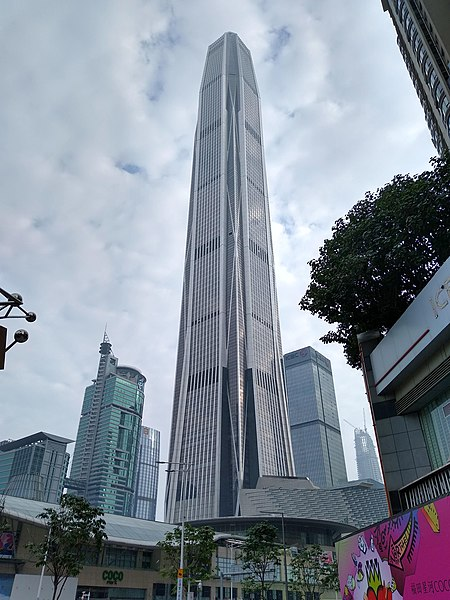
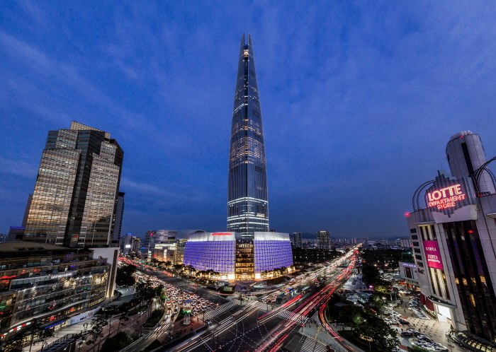
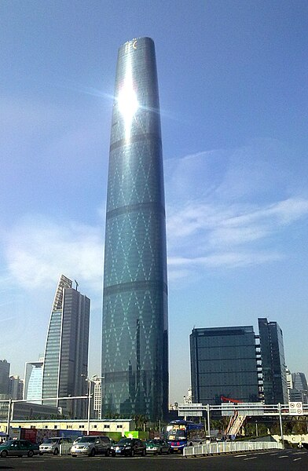
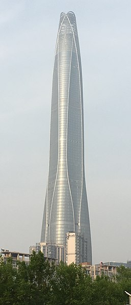

Witaj na stronie poświęconej największym budynkom świata!
Na tej stronie znajdziesz informacje o najwspanialszych wieżowcach, które zadziwiają swoją wielkością i pięknem architektonicznym. Poznaj historie, dane techniczne oraz ciekawostki na temat najwyższych budynków na świecie.
 |
1. Burdż Chalifa (arab. برج خليفة, Burǧ Ḫalīfa, Burj Khalifa) to najwyższy budynek na świecie, który znajduje się w Dubaju. Ma wysokość 828 metrów i 163 piętra. W Zjednoczonych Emiratach Arabskich, zbudowany przez przedsiębiorstwa Samsung Constructions, BESIX i Arabtec. Najwyższy budynek świata, który pobił rekord wysokości dla budowli dzierżony wcześniej przez polski Maszt radiowy w Konstantynowie (646m). Jego nazwa pochodzi od imienia szejka Chalify ibn Zajida Al Nahajjana, byłego prezydenta Zjednoczonych Emiratów Arabskich. |
 |
2. Merdeka 118, także PNB 118 - zlokalizowany w Kuala Lumpur, Malezja, to drugi najwyższy budynek na świecie (stan na 2024 rok). Jego wysokość wynosi imponujące 678,9 metrów (2227 stóp) i obejmuje 118 pięter, co czyni go najwyższym budynkiem w Malezji i całej Azji Południowo-Wschodniej. Konstrukcja jest w dużej mierze wielofunkcyjna, łącząc biura, hotele, przestrzeń handlową oraz punkty widokowe, w tym jeden z najwyżej położonych tarasów widokowych na świecie. Budynek wyróżnia się unikalną architekturą inspirowaną symboliką i dziedzictwem Malezji, a jego fasada ma geometryczne kształty przypominające diamenty, co dodaje mu wyjątkowego charakteru. |
 |
3. Shanghai Tower (chiń. 上海中心大厦; pinyin Shànghǎi Zhōngxīn Dàshà) - zlokalizowany w dzielnicy Pudong w Szanghaju, Chiny, to trzeci najwyższy budynek na świecie (po Merdeka 118). Jego wysokość wynosi 632 metry (2073 stopy) i obejmuje 128 pięter. Wieżowiec jest znany ze swojej spiralnej konstrukcji, która symbolizuje dynamiczny rozwój Chin. Unikalna, skręcona forma budynku została zaprojektowana nie tylko ze względów estetycznych, ale także by redukować siłę wiatru działającą na konstrukcję. Shanghai Tower pełni funkcję wielofunkcyjnego centrum, z miejscami na biura, hotele, przestrzenie handlowe, a także atrakcje turystyczne, w tym najwyżej położony taras widokowy na świecie. Jest również jednym z najbardziej ekologicznych wieżowców, zaprojektowanym z myślą o oszczędzaniu energii i wykorzystaniu nowoczesnych technologii. |
 |
4. Abradż al-Bajt (arab. أبراج البيت, Abrāǧ al-Bayt) - znany również jako Makkah Royal Clock Tower, to kompleks budynków w Mekce, Arabia Saudyjska. Najbardziej rozpoznawalnym elementem kompleksu jest Wieża Zegarowa, która osiąga wysokość 601 metrów (1972 stopy), co czyni ją piątym najwyższym budynkiem na świecie (stan na 2024 rok). Jest to również najwyższa wieża zegarowa na świecie i posiada największą tarczę zegarową, widoczną z dużej odległości. Kompleks pełni funkcję hotelową i usługową, służąc pielgrzymom odwiedzającym Mekkę. Oferuje przestrzeń dla tysięcy gości, a jego wnętrza mieszczą luksusowe apartamenty, centra handlowe, muzea i sale konferencyjne. Abradż al-Bajt znajduje się w bezpośrednim sąsiedztwie Wielkiego Meczetu (Al-Masjid al-Haram), co sprawia, że jest strategicznie położonym miejscem dla osób uczestniczących w pielgrzymce (Hajj). |
|  | 5. Ping An Finance Center (chiń.: 平安金融中心; pinyin: Píng’ān jīnróng zhōngxīn) - jest to piąty najwyższy budynek na świecie (stan na 2024 rok) i jeden z najwyższych w Chinach. Budynek posiada 115 pięter i pełni głównie funkcję biurową, ale mieści również centrum handlowe, hotel oraz przestrzenie konferencyjne. Ping An Finance Center wyróżnia się nowoczesnym designem, z ostrym, smukłym kształtem i fasadą ze stali nierdzewnej, co nadaje mu elegancki wygląd. Budynek zaprojektowano z myślą o funkcjonalności i efektywności energetycznej, a jego strategiczne położenie w centrum biznesowym Shenzhen sprawia, że jest jednym z kluczowych punktów miasta Budynek został zbudowany z myślą o siedzibie Ping An Insurance, jednej z największych firm ubezpieczeniowych w Chinach, i stał się symbolem dynamicznego rozwoju gospodarczego regionu. |
 |
6.China 117 Tower (chiń. 高银金融117; pinyin Gāoyín Jīnróng 117) - znana także jako Goldin Finance 117, to imponujący wieżowiec zlokalizowany w Tiencinie, Chiny. Wieża ma wysokość 596,5 metra (1957 stóp), co czyni ją jednym z najwyższych budynków na świecie, zajmując miejsce w czołówce najwyższych budowli (stan na 2024 rok). Budynek posiada 128 pięter, a jego konstrukcja, choć wciąż nie w pełni ukończona, jest już ikoną chińskiej architektury. |
|  | 7. Lotte World Tower (kor. 롯데월드타워) - znajdujący się w Seulu, Korea Południowa, to najwyższy budynek w kraju i piąty najwyższy budynek na świecie (stan na 2024 rok). Jego wysokość wynosi 555 metrów (1823 stopy), a konstrukcja obejmuje 123 piętra. Wieżowiec został ukończony w 2016 roku i pełni funkcję wielofunkcyjną, łącząc przestrzenie biurowe, apartamenty, hotel oraz centrum handlowe. Lotte World Tower wyróżnia się eleganckim, smukłym designem inspirowanym tradycyjnymi formami ceramiki koreańskiej. W jego wnętrzu znajduje się m.in. Sky Seoul, czyli najwyższy taras widokowy w Korei Południowej, oferujący spektakularne widoki na Seul. Budynek jest również wyposażony w jedną z najszybszych wind na świecie, która zabiera gości na sam szczyt w mniej niż minutę. |
 |
8. One World Trade Center (wcześniej pod nazwą Freedom Tower pol. Wieża Wolności) - Jest to najwyższy budynek w Stanach Zjednoczonych, a ósmy na świecie, po Burdż Chalify, Merdece 118, Shanghai Tower, Abradż al-Bajt, Ping An Finance Center oraz Lotte World Tower. Budynek został oddany do użytku i oficjalnie otwarty 3 listopada 2014 roku, 13 lat po zamachu. jeden z czterech nowojorskich wieżowców stanowiących część nowego kompleksu, który powstał w miejscu biurowców WTC zniszczonych w wyniku zamachu z 11 września 2001. Jego wysokość wynosi 541 metrów, czyli 1776 stóp, które symbolicznie oznaczają datę ogłoszenia Deklaracji Niepodległości Stanów Zjednoczonych. |
|  | 9. Guangzhou International Finance Center (chiń. upr. 广州国际金融中心) - To 530-metrowy wieżowiec typu mixed-use w Guangzhou, Guangdong, który został ukończony w październiku 2016 roku. Jest to najwyższy ukończony budynek w Guangzhou, trzeci co do wysokości w Chinach i siódmy co do wysokości na świecie. Centrum Finansowe Guangzhou CTF ma łącznie 111 kondygnacji naziemnych i pięć podziemnych i mieści centrum handlowe, biura, apartamenty i hotel. Powierzchnia użytkowa brutto wieżowca wynosi 507 681,0 m2, z czego nieco ponad 20% stanowi powierzchnia nie samego wieżowca, lecz połączonego z nim podium. |
|  | 10. Tianjin Chow Tai Fook Binhai Center - Tianjin CTF Finance Center to superwysoki wieżowiec w Tianjin w Chinach. Budowa rozpoczęła się w 2013 roku i została zakończona w 2019 roku. Wieża jest drugim najwyższym budynkiem w Tianjin po Goldin Finance 117, ósmym najwyższym budynkiem na świecie i najwyższym budynkiem na świecie o mniej niż 100 piętrach. Znajduje się on w zewnętrznej dzielnicy Obszaru Rozwoju Gospodarczo-Technologicznego Tianjin. Centrum Finansowe Tianjin CTF zostało zaprojektowane przez Skidmore, Owings & Merrill LLP we współpracy z Ronald Lu & Partners. |